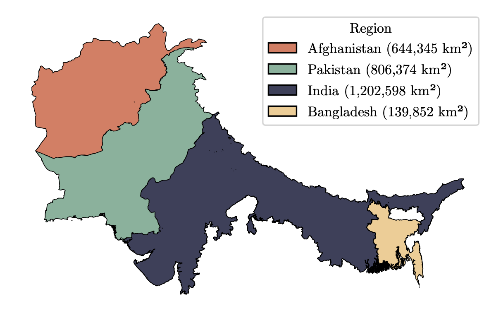

Dataset
Dataset Overview
SentinelKilnDB is a comprehensive dataset for brick kiln detection containing 62,671 manually validated brick kilns across South Asia. The dataset covers 2.8 million km² across India, Bangladesh, Pakistan, and Afghanistan using Sentinel-2 satellite imagery.

Key Statistics
62,671 Total Kilns
2.8M km² Coverage
208 Hours Manual Validation
10m Sentinel-2 Resolution
Data Collection Methodology
Our iterative data collection process consisted of four main phases:
1. Initial Dataset
Started with 30,638 brick kilns from our previous work using Planet imagery across five Indian states covering 520K km².
2. Model Training & Prediction
Trained YOLOv11L-OBB model on initial data and predicted kiln locations across extended regions.
3. Manual Validation
Used custom hand-validation interface with ESRI Wayback imagery to verify all predictions.
4. Iterative Expansion
Repeated training-prediction-validation cycle four times to reach final dataset of 62,671 kilns.
Regional Breakdown
| Country | States/Regions | CFCBK | FCBK | Zigzag | Total | Percentage |
|---|---|---|---|---|---|---|
| India | 9 states | 1,939 | 21,451 | 19,592 | 42,982 | 68.6% |
| Bangladesh | 8 divisions | 2 | 1,461 | 5,440 | 6,903 | 11.0% |
| Pakistan | 4 provinces | 3 | 10,443 | 1,731 | 12,177 | 19.4% |
| Afghanistan | 34 provinces | 0 | 608 | 1 | 609 | 1.0% |
| Total | - | 1,944 | 33,963 | 26,764 | 62,671 | 100% |
Kiln Type Distribution
FCBK Kilns (54.2%)
- Fixed Chimney Bull’s Trench Kilns
- Most prevalent type (33,963 kilns)
- Moderate efficiency
- Found across all countries
Zigzag Kilns (42.7%)
- Natural/Forced Draft Technology
- 40% more fuel-efficient than FCBK
- 26,764 kilns identified
- Higher adoption in India & Bangladesh
CFCBK Kilns (3.1%)
- Circular Fixed Chimney Bull’s Trench Kilns
- Oldest design (1,944 kilns)
- Highest fuel consumption
- Mostly found in India
Data Quality & Validation
Hand Validation Process
- 208 hours of expert manual validation
- Multiple imagery sources for verification
- Two-stage review with expert adjudication
- Near-zero false positives ensured
Validation Sources
- Primary: Sentinel-2 (10m resolution, free access)
- Validation: Planet Labs, ESRI Wayback, Google Earth Pro
- Temporal: Multi-seasonal data coverage
- Quality Control: Consistent annotation guidelines
External Validation
Our district-level kiln counts in Uttar Pradesh show r = 0.94 correlation with official 2023 Uttar Pradesh Pollution Control Board survey data (19,671 kilns), confirming dataset completeness.
Annotation Formats
The dataset provides annotations in multiple formats for maximum compatibility:
| Format | Description | Use Case |
|---|---|---|
| YOLO OBB | Oriented bounding boxes in YOLO format | Modern OBB detection models |
| YOLO AA | Axis-aligned bounding boxes in YOLO format | Traditional object detection |
| DOTA | Annotations compatible with DOTA benchmark | Research comparisons |
Oriented Bounding Box Benefits
- Precise Area Estimation: Accurate kiln footprint calculation
- Better Spatial Representation: Accounts for kiln orientation
- Emission Modeling: Enables individual kiln-level estimates
- Policy Applications: Better compliance monitoring
Dataset Splits
| Split | Images (.png) | Label Files (.txt) | Bounding Boxes |
|---|---|---|---|
| Train | 71,856 | 47,214 | 63,787 |
| Validation | 23,952 | 15,738 | 21,042 |
| Test | 18,492 | 10,278 | 12,819 |
| Total | 114,300 | 73,230 | 97,648 |
Access & Downloads
License
Creative Commons Attribution–NonCommercial 4.0 International License (CC BY-NC 4.0)
Dataset Structure
SentinelKilnDB/
├── images/ # Sentinel-2 imagery tiles
├── labels/ # Annotation files
│ ├── yolo_obb/ # YOLO OBB format
│ ├── yolo_aa/ # YOLO axis-aligned format
│ └── dota/ # DOTA format
├── metadata/ # Dataset statistics
└── README.md # DocumentationComparison with Existing Datasets
| Dataset | Resolution | Coverage | Annotations | Public | Instances | Year |
|---|---|---|---|---|---|---|
| VEDAI | 0.125m | Local | AA boxes | ✅ | 3,640 | 2016 |
| HRSC2016 | 0.4-2m | Local | AA boxes | ✅ | 2,976 | 2016 |
| DOTA-V1.0 | 0.1-4.5m | Regional | OBB + AA | ✅ | 188,282 | 2018 |
| DIOR-R | 0.5-1m | Regional | OBB | ✅ | 192,518 | 2022 |
| SentinelKilnDB | 10m | Continental | OBB + AA | ✅ | 105,933 | 2025 |
Technical Specifications
Image Properties
- Resolution: 10 meters per pixel
- Format: PNG (RGB)
- Typical Kiln Size: ~30 pixels
- Coordinate System: WGS84
- Imagery Source: Sentinel-2 Level-2A
Annotation Properties
- Bounding Box Types: Oriented (OBB) and Axis-Aligned (AA)
- Classes: 3 (CFCBK, FCBK, Zigzag)
- Validation: Manual expert review
- Quality: Near-zero false positives
Environmental Impact
This dataset enables:
- Emission Inventory Updates: More accurate regional estimates
- Technology Monitoring: Track Zigzag kiln adoption rates
- Air Quality Modeling: Better inputs for chemical transport models
- Policy Evaluation: Assess effectiveness of environmental regulations
- Health Impact Studies: Connect kiln locations with health outcomes